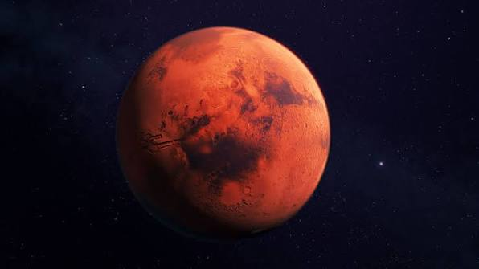
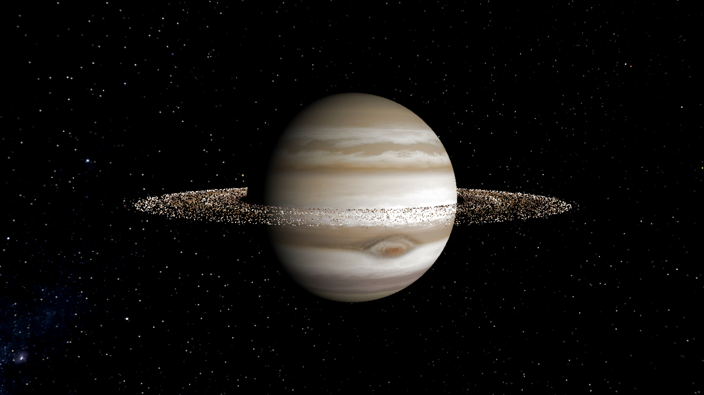

01 / KIZIL DÜNYA8 GÜN
225 M KM · 4 AY YOLCULUK
↗Mars
Olimpos Dağı'nın gölgesinde, yıldızlara dokun.
Alışılmışın çok ötesinde bir yolculuk. Güneş Sistemi'nin görkemli dünyalarını, yeni nesil yıldız gemilerimizle keşfet.


Olimpos Dağı'nın gölgesinde, yıldızlara dokun.
Büyük Kırmızı Leke'ye yörüngeden tanık ol.

Halkaların içinden geçen eşsiz bir yıldız yürüyüşü.
Bir yolculuktan fazlası.
Bakış açını değiştiren bir deneyim.